DT (DecisionTransformer)¶
Overview¶
Applying reinforcement learning technology in a specific decision-making field necessitates the transformation of the original problem into a reasonable Markov Decision Process (MDP) problem. However, the effectiveness of conventional reinforcement learning methods may be significantly reduced if the problem environment possesses certain unfriendly characteristics, such as partial observability or non-stationary processes. On the other hand, with the development of the data-driven paradigm in recent years, big data and pre-trained large models have shined in the fields of Computer Vision and Natural Language Processing, such as CLIP, DALL·E, and GPT-3, etc., all of which have achieved amazing results, and sequence prediction technology is one of the core modules among them. But for decision intelligence, especially Reinforcement Learning, due to the lack of large datasets similar to CV and NLP and suitable pre-training tasks, the progress of decision-making large models has been slow.
To promote the development of decision-making large models and enhance the practical value of related technologies, many researchers have shifted their focus to the subfield of Offline RL/Batch RL. Offline RL is a reinforcement learning task that trains policies solely through an offline dataset, without any interaction with the environment during the training process. This raises the question: can we learn from some of the research results in the fields of CV and NLP, such as sequence prediction related technologies?
Consequently, in 2021, a series of works represented by Decision Transformer[3]/Trajectory Transformer[1-2] Transformer emerged. These works aimed to simplify decision-making problems into sequence predictions, apply transformer architectures to Reinforcement Learning (RL) tasks, and establish connections with language models such as GPT-x and BERT. Unlike traditional RL, which involves calculating value functions or policy gradients, the DT directly outputs the optimal action selection using a transformer that masks subsequent sequences. By specifying the return-to-go and utilizing state and action information, it can provide the next action and achieve the desired reward. Impressively, DT has not only reached but also surpassed the performance of state-of-the-art (SOTA) model-free offline RL algorithms in environments like Atari and D4RL (MuJoCo).
Quick Facts¶
DT is offline rl algorithm
DT support discrete and continuous action space
The DT utilizes a transformer for action prediction, but it has undergone modifications in the architecture of self-attention.
The architecture of the dataset utilized by then DT is dictated by the algorithm’s characteristics. It is imperative that these requirements are met during both the training and testing phases of the model.
Key Equations or Key Graphs¶
The architecture of DT as following:
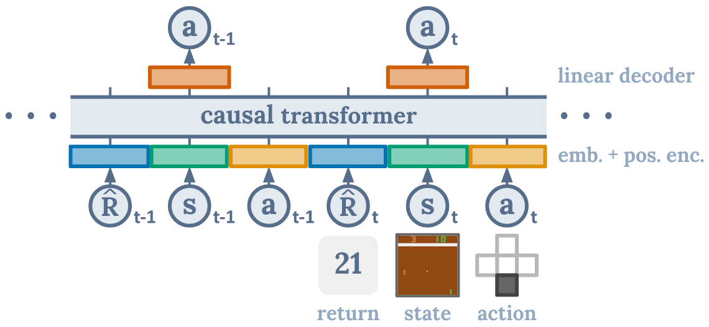The diagram illustrates that when the DT algorithm predicts the action at, it is only related to the current timestep’s rtand st, as well as the previous rt-n, st-n, at-n. It is not related to the subsequent steps. The causal transformer is the module used to achieve this effect.
Pseudo-code¶

Implementations¶
The default config of DTPolicy as following:
- class ding.policy.dt.DTPolicy(cfg: EasyDict, model: Module | None = None, enable_field: List[str] | None = None)[source]
- Overview:
Policy class of Decision Transformer algorithm in discrete environments. Paper link: https://arxiv.org/abs/2106.01345.
The neural network interface used is as follows:
- class ding.model.DecisionTransformer(state_dim: int | SequenceType, act_dim: int, n_blocks: int, h_dim: int, context_len: int, n_heads: int, drop_p: float, max_timestep: int = 4096, state_encoder: Module | None = None, continuous: bool = False)[source]
- Overview:
The implementation of decision transformer.
- Interfaces:
__init__,forward,configure_optimizers
- forward(timesteps: Tensor, states: Tensor, actions: Tensor, returns_to_go: Tensor, tar: int | None = None) Tuple[Tensor, Tensor, Tensor][source]
- Overview:
Forward computation graph of the decision transformer, input a sequence tensor and return a tensor with the same shape.
- Arguments:
timesteps (
torch.Tensor): The timestep for input sequence.states (
torch.Tensor): The sequence of states.actions (
torch.Tensor): The sequence of actions.returns_to_go (
torch.Tensor): The sequence of return-to-go.tar (
Optional[int]): Whether to predict action, regardless of index.
- Returns:
output (
Tuple[torch.Tensor, torch.Tensor, torch.Tensor]): Output contains three tensors, they are correspondingly the predicted states, predicted actions and predicted return-to-go.
- Examples:
>>> B, T = 4, 6 >>> state_dim = 3 >>> act_dim = 2 >>> DT_model = DecisionTransformer( state_dim=state_dim, act_dim=act_dim, n_blocks=3, h_dim=8, context_len=T, n_heads=2, drop_p=0.1, ) >>> timesteps = torch.randint(0, 100, [B, 3 * T - 1, 1], dtype=torch.long) # B x T >>> states = torch.randn([B, T, state_dim]) # B x T x state_dim >>> actions = torch.randint(0, act_dim, [B, T, 1]) >>> action_target = torch.randint(0, act_dim, [B, T, 1]) >>> returns_to_go_sample = torch.tensor([1, 0.8, 0.6, 0.4, 0.2, 0.]).repeat([B, 1]).unsqueeze(-1).float() >>> traj_mask = torch.ones([B, T], dtype=torch.long) # B x T >>> actions = actions.squeeze(-1) >>> state_preds, action_preds, return_preds = DT_model.forward( timesteps=timesteps, states=states, actions=actions, returns_to_go=returns_to_go ) >>> assert state_preds.shape == torch.Size([B, T, state_dim]) >>> assert return_preds.shape == torch.Size([B, T, 1]) >>> assert action_preds.shape == torch.Size([B, T, act_dim])
Benchmark¶
environment |
best mean reward (normalized) |
evaluation results |
config link |
comparison |
|---|---|---|---|---|
Hopper
(Hopper-medium)
|
0.753 +- 0.035 |

|
DT paper |
|
Hopper
(Hopper-expert)
|
1.170 +- 0.003 |
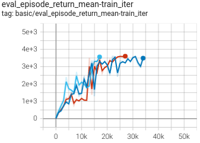 | DT paper |
|
Hopper
(Hopper-medium-replay)
|
0.651 +- 0.096 |
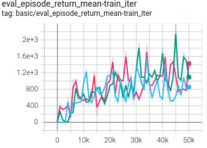 | DT paper |
|
Hopper
(Hopper-medium-expert)
|
1.150 +- 0.016 |
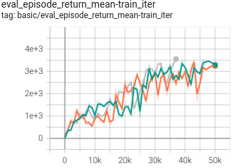 | DT paper |
|
Walker2d
(Walker2d-medium)
|
0.829 +- 0.020 |
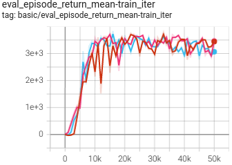 | DT paper |
|
Walker2d
(Walker2d-expert)
|
1.093 +- 0.004 |
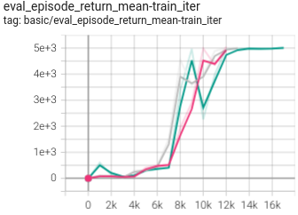 | DT paper |
|
Walker2d
(Walker2d-medium-replay)
|
0.603 +- 0.014 |
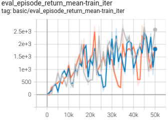 | DT paper |
|
Walker2d
(Walker2d-medium-expert)
|
1.091 +- 0.002 |
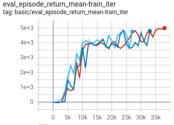 | DT paper |
|
HalfCheetah
(HalfCheetah-medium)
|
0.433 +- 0.0007 |
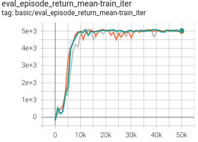 | DT paper |
|
HalfCheetah
(HalfCheetah-expert)
|
0.662 +- 0.057 |
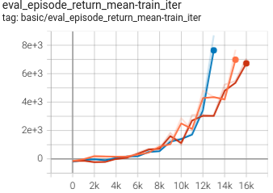 | DT paper |
|
HalfCheetah
(HalfCheetah-medium-replay)
|
0.401 +- 0.007 |
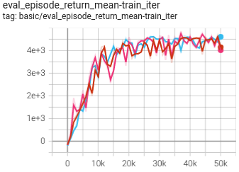 | DT paper |
|
HalfCheetah
(HalfCheetah-medium-expert)
|
0.517 +- 0.043 |
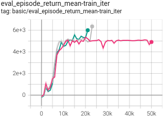 | DT paper |
|
Pong
(PongNoFrameskip-v4)
|
0.956 +- 0.020 |
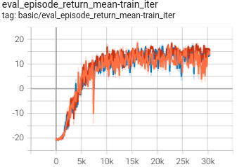 | DT paper |
|
Breakout
(BreakoutNoFrameskip-v4)
|
0.976 +- 0.190 |
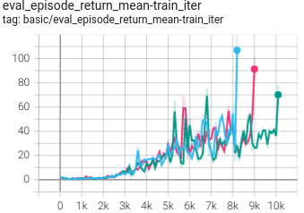 | DT paper |
P.S.： The above results were obtained by running the same configuration with three different random seeds(123， 213， 321).
Reference¶
Zheng, Q., Zhang, A., & Grover, A. (2022, June). Online decision transformer. In international conference on machine learning (pp. 27042-27059). PMLR.